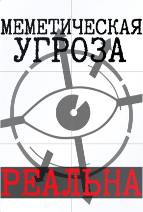
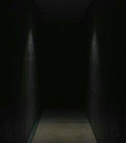
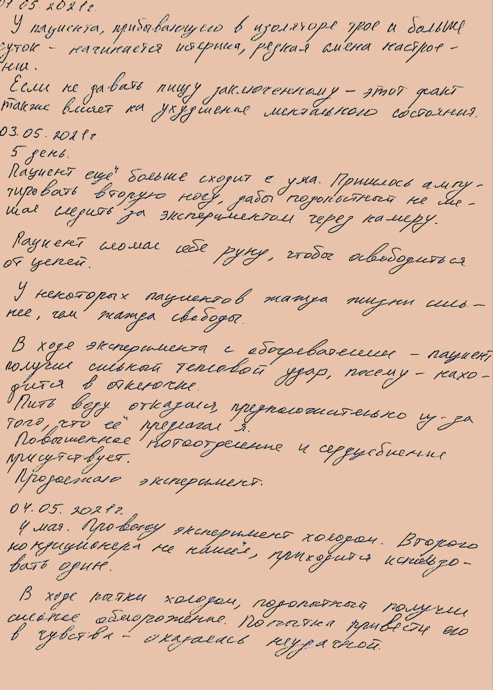
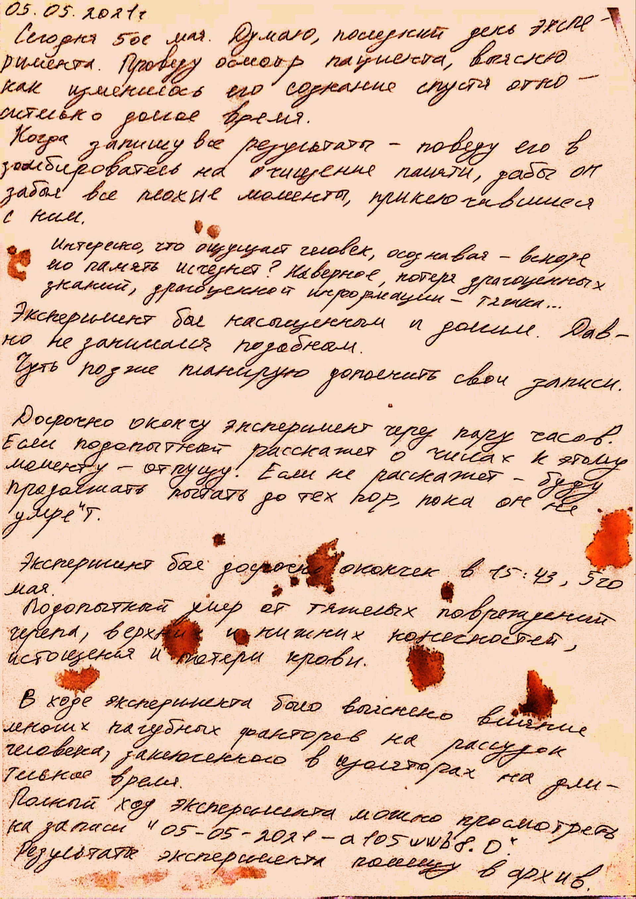
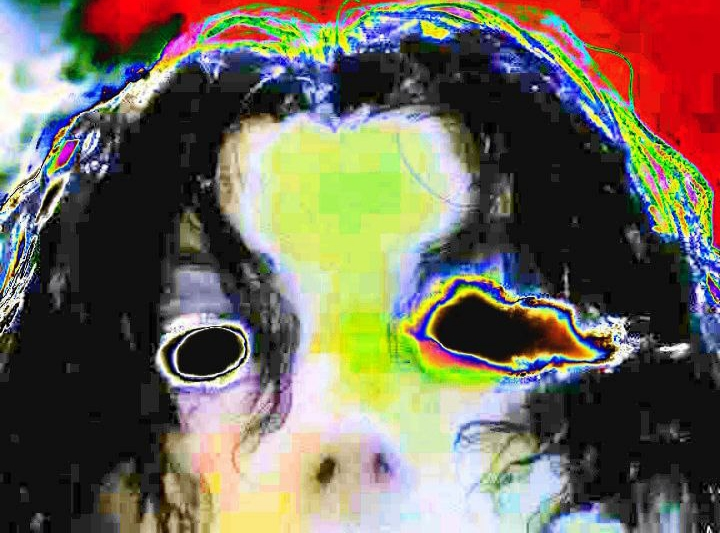
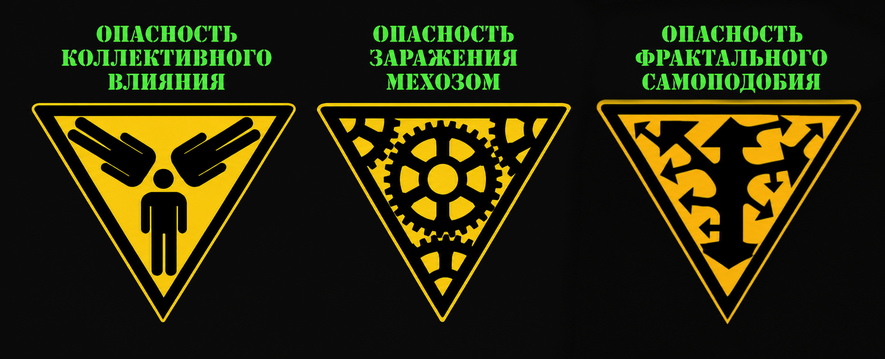
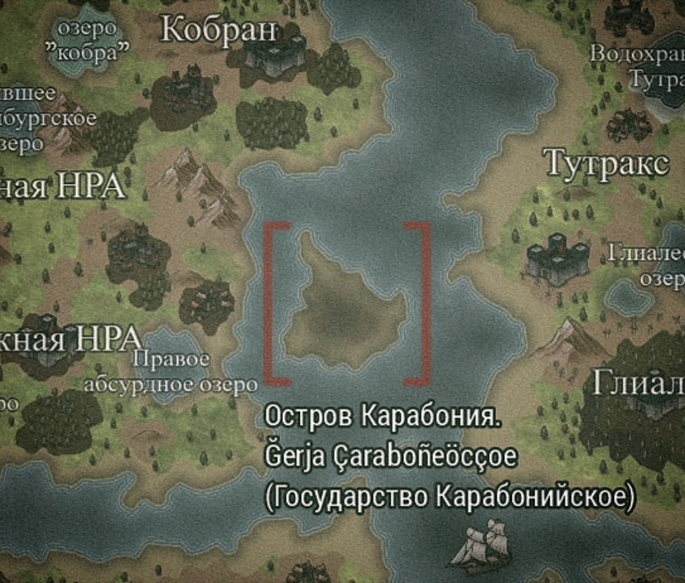

ВНИМАНИЕ!

Файл PocketMeasurement.txt (Есть в формате блокнотной записи)

• Объект “Аномальная комната” или “Карманное измерение”
• Класс объекта: 3
• Первое нахождение объекта: 17 января 2022 год
• Особые условия содержания: Вход в объект должен тщательно охраняться от посторонних. Любые попытки проникнуть в помещение — должны быть нейтрализованы. Контактирующие с аномалией должны проходить еженедельное психологическое обследование, если это возможно.
• Замечание: На момент 22.04.2022 Аномальная комната стала причиной смерти 3-х сотрудников Дурки: [ДАННЫЕ УДАЛЕНЫ (Обнаружено совпадение: Игрик)], Мэйко Судока, Латтэ Крейси.
• Описание: Основная комната представлена узким коридором, который ведет в просторное помещение с множеством дверей. В центре: антикварный старинный стол, фужеры покрытые паутиной и столовые приборы. В углу комнаты стоит керосиновая лампа.
Вся комната покрыта тёмным туманом.
Любая техника мгновенно отключается и ломается, попадая в объект. Из-за этого невозможно полноценное исследование.
Любая сущность, попадая в объект — навсегда исчезает.
[Наблюдение 17-01-22]
Максимус Моррисон: «Итак, таджики, которые убирали трупы военных в нашем здании, доложили, что один из их работяг нашел странную комнату. Зайдя в неё - тот пропал. Спустя 20-30 минут отправился второй таджик. Но и тот исчез бесследно…»
[Эксперимент 18-01-22А]
В ходе эксперимента, было выявлено, что комната заглушает звуковые волны (выстрелов), а пули “растворяются” в таинственном тумане.
[Эксперимент 18-01-22B]
Жучки, работающие дистанционно с пульта управления — теряют сигнал (связь), попадая в аномальную комнату.
[Эксперимент 18-01-22C]
Открыто еще одно удивительное свойство: Свет от фонаря обрывается на стыке между коридором и комнатой. Следовательно, комната не пропускает свет извне.
[Эксперимент 18-01-22D_1]
Обыкновенный карандаш был засунут руками в комнату (притом, руки не были в контакте с комнатой), после чего — предмет мгновенно был изъят. Замечено: Карандаш покрылся чёрной вязкой субстанцией.
[Эксперимент 18-01-22D_2]
Оказалось, что чёрная вязкая субстанция почти сразу выветривается на воздухе, ничего не оставляя после себя.
[Эксперимент 18-01-22E]
Телефон, проигрывающий рингтон, был полностью помещен в комнату. Итог: Телефон пропал, звук больше не был слышен.
[Эксперимент 18-01-22F]
С помощью тепловизора было установлено, что в комнате низкая температура.
[Эксперимент 18-01-22G]
Веревка была привязана к торсу человека — подопытного [ДАННЫЕ УДАЛЕНЫ]. Человек зашёл в помещение, а другие сотрудники держали верёвку снаружи.
Спустя некоторое время, нечто попыталось поглотить подопытного, но тот был вытащен из помещения с помощью веревки.
Подопытный был уже полностью в черной субстанции. Она залилась в рот, нос и глаза
[ДАННЫЕ УДАЛЕНЫ] не в состоянии разговаривать и описывать свои эмоции от увиденного, он начинает блевать черной массой на пол.
Спустя извержение рвотными массами, подопытный вытер рукавом рот и попытался походить. Пройдя пару метров — он замертво упал.
Черная жижа выветрилась.
В ходе визуального изучения тела, были обнаружены переломы таза и области около левого локтя.
В процессе вскрытия тела, было установлено, что черная жижа залилась в некоторые внутренние органы подопытного.
[Эксперимент 18-01-22H]
Попытка сфотографировать комнату снаружи — не увенчалась успехом. На снимке осталось только темное изображение.
[Эксперимент 21-01-22А_1]
В эксперименте участвовал 1 пленный. Ниже представлена текстовая запись эксперимента:
Максимус М.: Твоя задача проста - пройти коридор и засунуть руку внутрь комнаты. Только руку. И пробыть так 30-40 секунд. Всё просто. Дроид будет контролировать процесс.
Пленный: Что ж… Придется…
Пленный медленно проходит коридор и встает у входа в аномальную комнату. Пленный вытягивает руку и она погружается в густой темный туман.
Максимус М.: Ты ощущаешь что-нибудь?
Пленный: На самом деле… нет…
Максимус М.: Продолжай держать руку
Пленный стоит молча
Его рука постепенно начинает окутываться той самое темной жидкостью
Пленный: Я чувствую, будто мою руку кто-то схватил… эм…
Максимус М.: Хорошо. Продолжаем
Пленный продолжал спокойно стоять, до тех пор, пока… Нечто из тьмы не “схватило”, и не потащило внутрь комнаты
Пленный закричал, удерживаясь на месте изо всех сил.
Дроид вмешивается и оттаскивает пленного от входа. Лишь позже, хорошенько присмотревшись, пленный осознает, что тёмная жижа выветривается, а на её месте образуются раны, будто от ожогов или из-за кислоты.
Была оказана медицинская помощь.
[Эксперимент 21-01-22А_2]
Из ран пленного снова начинает вытекать черная жижа.
[Эксперимент 21-01-22А_3]
Рука пленного полностью покрылась черной жижей и начала гноить.
Спустя время, из руки начинает течь кровь вперемешку с черной жижей.
Пленному вновь была оказана медицинская помощь.
Гниение не прекращалось.
Серия некоторых блокнотных записей Максимуса Моррисона: Эксперимент над Гримом + Файл «05-05-2021-a105wwb8.0»
01.05.2021
У пациента, прибывающего в изоляторе трое и больше суток - начинается истерика, резкая смена настроения.
Если не давать пищу заключенному - этот факт также влияет на ухудшение ментального состояния
03.05.2021
5 день.
Пациент еще больше сходит с ума. Пришлось ампутировать вторую ногу, дабы подопытный не мешал следить за экспериментом через камеру.
03.05.2021
Пациент сломал себе руку, чтобы освободиться от цепей.
03.05.2021
У некоторых пациентов жажда жизни сильнее , чем жажда свободы.
03.05.2021
В ходе эксперимента с обогревателями - пациент получил сильный тепловой удар, посему - прибывает в отключке.
Пить воду отказался, предположительно из-за того, что её предлагаю именно я.
Повышенное потоотделение и сердцебиение присутствует.
Продолжаю эксперимент
04.05.2021
4 мая. Провожу эксперимент холодом. Второго кондиционера не нашел, приходится использовать один.
04.05.2021
В ходе пытки холодом, подопытный получил сильное обморожение. Попытка привести его в чувства - оказалось не удачной
05.05.2021
Сегодня 5ое мая. Думаю, последний день эксперимента. Проведу осмотр пациента, выясню как изменилось его сознание спустя относительно долгое время.
Когда запишу все результаты - поведу его в зомбирователь на очищение памяти, дабы он забыл все плохие моменты, приключившиеся с ним.
мелким шрифтом:
Интересно, что ощущает человек, осознавая - вскоре его память исчез? Наверное, потеря драгоценных знаний, драгоценной информации - тяжка…
обычным подчерком продолжаю:
Эксперимент был насыщенным и долгим. Давно не занимался подобным.
Чуть позже планирую дополнить свои записи.
05.05.2021
Досрочно окончу эксперимент через пару часов. Если подопытный расскажет о числах к этому моменту - отпущу. Если не расскажет - буду продолжать пытать до тех пор, пока он не умрет.
05.05.2021
Взял блокнот и делаю запись:
Эксперимент был досрочно окончен в 15:43, 5го мая.
Подопытный умер от тяжелых повреждений черепа, верхних и нижних конечностей, истощения и потери крови.
[На листке видны засохшие капли крови]
05.05.2021
В ходе эксперимента было выяснено влияние многих пагубных факторов на рассудок человека, заключенного в изоляторах на длительное время.
Полный ход эксперимента можно просмотреть на записи “05-05-2021-a105wwb8.0”
Результаты эксперимента помещу в архив.


Блокнотные записи Драко об аномалиях (с уст Максимуса Моррисона)
Био-поле — тоже излучение. Согласно Дурковской парапсихологии.
У каждого человека есть собственное био-поле. Только у аномалий оно либо повреждено, либо функционирует неправильно.
Когнитивное излучение — особый тип излучения, которое выделяет человек. Когнитивное излучение связано с мышлением, мыслями, речью, и др.
Согласно теории Великого Максимуса Моррисон — через когнитивное излучение можно менять сознание людей и манипулировать ими.
Аномалии могут обладать либо психическими отклонениями, либо физическими.
Отклонении в био-поле относятся к психическим.
Отклонения в когнитивном излучении — тоже психическое.
У человека био-поле состоит из следующих слоев:
1 Рубрум
2 Урансиа
3 Флавум
4 Виридис
5 Каерулум
6 Венетус
7 Виола
И пусть каждый слой био-поля означает свою эмоцию:
1 Рубрум = Гнев, ярость, агрессия
2 Урансиа = Страх, ужас
3 Флавум = Удивление, возбуждение, страсть
4 Виридис = Радость, удовольствие, гармония
5 Каерулум = Стыд, унижение
6 Венетус = Уныние, печаль, страдание
7 Виола = Отвращение, презрение
Если хоть один слой нарушится — то баланс в теле пропадет и человек будет неуравновешенной аномалией
Пропагандистская запись: Файл Zt-5.70-k.wav
Всех приветствую, дорогие пациенты и персонал Психиатрической Лечебницы Фрэртона номер 1.
Прослушайте данную запись до конца. Заранее: Спасибо.
Плавный музыкальный переход
Нас часто спрашивают “Какие цели у Дурки?”, ответ прост: Наша главная, перспективная миссия - вылечить психбольных и сделать для них комфортные условия проживания! У нас нет места для ссор и скандалов! Здесь царит только дружественная атмосфера и уют!
Женский смех
Для осуществления наших целей, мы используем только высокотехнологичные, а главное - безопасные методы содержания и лечения пациентов.
Новый музыкальный переход
И каковы наши успехи? Ха! Мы работаем уже более одного года и знаем точно, что почти каждый пациент приходит в норму за пару дней и может начинать жить обычной жизнью! Здоровье и настроение людей - важный аспект для нас!
Переход
В заключении напомним, что главными ценностями работников являются: Верность. Ответственность. Хладнокровн…- Помехи Адекватность.
Следуя нашим целям, используя наши методы и опираясь на наши ценности - ВМЕСТЕ мы сможем создать идеальный мир и идеальное будущее!
Долг каждого из персонала - Служить Дурке!
Слава Ей! Ура!
Блокнотная запись Максимуса Моррисона о войне
Запись в блокноте:
15 апр. 2021 г.
Завтра намечается война…
Я встану на защиту Фрэртона. Не знаю, будет ли нужна моя помощь, однако…
Если меня тяжело ранят - Пусть моим лечением займется Флэр и Лометра.
Пока начну приходить в себя - Кирилл будет присматривать за Дуркой. Нельзя допустить, чтобы её разрушили.
Ханк и Дориэл - будут в качестве дополнительной защиты. Не дайте кобрановским негодяям вступить на наши земли. Не дайте им убить всех.
Если до завтрашнего дня не выпущу Ичиро, приказываю сделать это досрочно.
Всё оружие хранится в комнате охраны и на складе СРД.
Необходимые ключи - у меня в кармане.
Если смерти Дурки не избежать - отдаю приказ купить каждому сотруднику по одному билету и вывести всех в оперативном порядке.
Деньги на билеты разрешаю взять из моего сейфа.
Главная задача для нас:
• Спасти здание.
• Спасти Фрэртон.
• Спасти народ.
• Спасти сотрудников.
Блокнотная запись Максимуса Моррисона: 24.09.2021
Вот и снова я пишу “завещание”. В прошлый раз, войны не были на столько кровопролитные и жестокие, но за последние пару месяцев - Всё изменилось.
Таки слово мое последнее, если умру я:
Уничтожте ВСЕ разработки, нажитые нами. Сожгите все чертежи и зарисовки. Кобрановская зараза не должна знать о наших технологиях и о том, как их создавать и использовать.
Также, прошу сломать, подорвать, или как-то иначе избавиться от зомбирователя. Инструкцию к нему - сожгите.
В топку отправить прошу и мой блокнот, в котором содержится эта запись.
Мой труп, хочу, чтобы был сожжен в нашем, дурковском крематории. Прах - в баночку. Баночку - закопать во дворе Дурки (Или её остатков. Как получится).
Рядом с баночкой, если будет возможность, закопайте флешку со всеми сохранившимися записями из камер видеонаблюдения.
За место меня, с КОНовцами и их злодеяниями будут бороться: Кирилл, Дориэл, Лометра, Арт. В случае необходимости возьмите в подмогу Ханка и Икса.
Не ссорьтесь по пустякам. Придумывайте стратегии вместе. Вместе и ведите атаку. Вместе - очистите Дурку нашу, братцы!
Все деньги из сейфа моего - разделите между собой. Остатки раздайте бедным, торгашу или таджикам.
Коль плохо всё совсем станет.
Коль зараза неместная оккупирует ВСЁ здание - так вы сожгите Дурку…
НЕ ДАЙТЕ ЭТИМ ПАРАЗИТАМ НАШЕ РОДНОЕ МЕСТО! ГДЕ ЖИЛИ МЫ, ГДЕ РАБОТАЛИ МЫ, ГДЕ…- [подчерк далее не разборчив]
Аудиофайл «8.01-V.mp3»
[СОДЕРЖИМОЕ УТЕРЯНО]
[Изменено 01.05.2022: Содержимое восстановлено. Текстовая запись файла представлена ниже]
Дорогие друзья…
[помехи]
Вступайте в ряды охраны !
Только вместе, мы очистим Дурку от негодяев и поможет больным братьям нашим !
[помехи]
[помехи]
Вступайте ж ряды врачей ! Помогите шизоидам !
очередные помехи
[запись обрывается]
Аудиофайл «1.65-A.mp3»
[СОДЕРЖИМОЕ УТЕРЯНО]
[Изменено 01.05.2022: Содержимое восстановлено. Текстовая запись файла представлена ниже]
Дорогие… товарищи…
[помехи]
Запомни, что суицид - это не выход ! Прекратите колечить себя…
[помехи]
Администрация Дурки старается помочь людям с суицидальными наклонностями. Прислушайтесь !
Живите и трудитесь на благо нашей с вами , родной - Дурки !
Слава
[помехи]
Дурке !
Записи с камер “двор вблизи дурки”: Агитационная машина
Вы живёте в самой лучшей стране в мире, а остальные страны испытывают к вам одну лишь зависть! Каждый гражданин нашей страны получает всё необходимое для счастливой и беззаботной жизни! Мыло, печенье, рис и поощрительные грамоты!
Но помните, что завистливый враг не дремлет! Волны террора которые супостаты вероломно поднимают в сторону нашего великого государства рассеиваются благодаря нашему Мудрому Президенту от партии РОСА!
Вместе мы, в единой Независимой Республике Абсурдистан - способны противостоять любому злу!
Гражданин! Будь бдителен, наблюдай за окружающими, выявляй саботажников, революционеров, мятежников и докладывай о них! Мы не позволим агрессивному империализму затмить нашу трудовую славу!
Чтобы отбить яростную политику врага и отстоять своё право на жизнь - мы пойдём своим путём и докажем, что народ и президент - едины! Ум, честь и совесть нашего государства - это наш Великий Рулевой!
Слава нашему Мудрому Президенту!
Слава нашей Независимой Республике Абсурдистан!
Блокнотные заметки Максимуса Моррисона о причинах смерти людей
31.10.2021
Имя: Лометра.
Причина смерти: Проблемы с легкими.
31.10.2021
Имя: Икс
Причина смерти: Проблемы с почками.
24.10.2020
Имя: Тоука
Фамилия: Киришима
Причина смерти: Была убита из-за невозможности лечения
03.10.2020
Имя: Джуда
Фамилия: Масадо
Причина смерти: Авария, ДТП. Место: (дорога); окраина леса
03.10.2020
Имя: Лили
Причина смерти: Суицид. Сгорела заживо
15.07.2020
Имя: Хартошка
Причина смерти: Несчастный случай
Заметка на компьютере Максимуса Моррисона о причинах смерти людей
18.07.2020
Имя: Герман
Причина смерти: Суицид
13.07.2020
Имя: Александр
Фамилия: (???) Добрый
Возраст: 16 лет
Причина смерти: Суицид
12.07.2020
Имя: Георгий
Причина смерти: Несчастный случай
12.07.2020
Имя: Стас
Причина смерти: Несчастный случай на работе
10.07.2020
Имя: Werwolf
Возраст: (приблизительно) 30 лет
Причина: Несчастный случай на работе
06.07.2020
Имя: Мария
Причина смерти: Суицид во время содержания в одиночной камере
04.07.2020
Имя: Андрей (Ондрюша)
Причина смерти: Суицид. Выстрел из автомата
04.07.2020
Имя: Мерлин
Фамилия: Хако (???)
Возраст: 17 (???)
Причина смерти: Несчастный случай — нехватка воздуха. Удушье.
Информация из архива
- Имя | Фамилия: Хайпфулл Люденберг
- Прозвище: Хайпи
- Пол: Мужской
- Ориентация: Натурал
- Возраст: 14
- Род занятий: Метание ножей
- Характер: Спокойный
- Любит: Запах крови
- Не любит: Людей
- Страхи: Нету , он все пережил и поборол
- Факт: Сделал первое убийство в 12 лет
- Связи: -
- Биография:
Хайпфулл, человек у которого убили всю семью когда ему было всего лишь 7 лет. Проживал он на улицах, потому что у него не было где переночевать. Но, через 5 лет заметили явно что-то странное, он преследовал одного человека, следил за ним. И когда этот человек зашёл явно не на тот угол, наш герой сделал фатальный удар ножом в сердце. Очень испугнувшись, Люденберг убежал…
[Лист оборван]
Через 2 года взялись за дело убийцы, а в скорее его поймали и отправили в дурку на реабилитацию.
Примечание: В файле сделаны небольшие поправки.
Примечание 2: Не вся информация в файле является достоверной.
Архивный файл 001_knowledge.zip: «Ответы на все вопросы»
Примечание: Невозможно точно сказать, существует ли (существовал ли) данный архивный файл или нет. Точно также, невозможно описать его содержимое.
[СОДЕРЖИМОЕ ЗАБЛОКИРОВАНО или УТЕРЯНО или ОТСУТСТВУЕТ]
Тест-для-санитара.pdf
[СОДЕРЖИМОЕ УТЕРЯНО]
Блокнотная культистская запись Максимуса Моррисона
Salve, mi Durka.
Sit vobiscum benedictio magna.
Moriantur inimici tui.
Pro Durka gloria.
Morbum depellere.
Tute mades cruore malevolorum.
Fortior.
Potentiores fieri.
Da mihi scientiam.
Da mihi immortalitatem.
da vires extraterrestrales.
Fidelis vester sum dispensator.
Amen.
Славься, Дурка наша родная.
Да прибудет с тобой великое благо.
Да умрут же враги твои.
Во славу Дурки.
Очистись от недуга.
Омочи себя в крови недоброжелателей.
Стань сильнее.
Стань могущественнее.
Даруй мне знание.
Даруй мне бессмертие.
Даруй мне силу внеземную.
Верный управляющий твой я.
Аминь.
«Священное» писание Максимуса Моррисона
…Дурка - чистилище для людей. Сюда приходят все: от убийц до шизиков. Все они ищут свой путь, их души не спокойны. Дабы обрести покой - их души должны быть распределены.
Кто-то способен искупить свои грехи и стать подобием ангела - всадником… Который проводит смертных в их мир. В тот - КОТОРЫЙ ЗАСЛУЖИЛИ ЭТИ УБЛЮД… <текст не разборчив>
…кто-то - просто умирает. Его душа отправляется в ад.
• Есть ли истинный рай?
• Как туда попасть?
<неразборчивый текст> …ибо истина познаётся… <неразборчивые каракули> …оттого и истинного рая быть не может. Каждый грешён пред Дуркой и его величеством Управляющим.
<целый неразборчивый абзац>
…
Никто не может судить вас кроме его - всевышнего, его власть здесь…
Он всё видит. Всё знает.
Любое ваше действие может быть предугадано им.
!!!ГЛАЗА ВСЕВИДЯЩЕГО!!!
…блокнот его, блокнот управляющего - святой артефакт. Аминь.
/заметки/
Дуркарианство? Звучит странно.
Оккультизм. Нумерология.
Числа значат гораздо больше. Нужно быть внимательнее и искать закономерности.
Оккультная секта поклонения Дурке (ОСПД). Это название более хорошее.
<безуспешные попытки писать на латыни> Странно. А в храме получалось.
Мне снился сон!… Это было ведение!…
~0:00
Я смог написать текст на латыни опираясь только на свое ведение. Я удивлен с себя.
Сегодня ночью я ощущаю себя странно.
тПИП нужно будет принять.
Исследование от [ДАННЫЕ ЗАБЛОКИРОВАНЫ]
<…> При определённых условиях, паихотронное излучение способно порождать сущностей, похожих на людей. Тем самым “клонируя” их. Этих психотронных двойников крайне сложно зафиксировать на какую-либо видео-/аудио- аппаратуру. Однако, кое что нам стало известно: Тело психотронного клона излучает холод, подобно холоду от призрака или потусторонней сущности.
Большинство психотронных клонов враждебны, и, как правило, эта враждебность проявляется только к “оригиналу”.
Ниже представлен пример психотронного клона.
[Прикреплены файлы: 1.jpg, 2.jpg, 3.jpg, 4.jpg]
1.jpg
Фотография человека по имени [ДАННЫЕ ЗАБЛОКИРОВАНЫ]
2.jpg
Снимок через тепловизор (изображение с вероятностью 90% искажено)
3.jpg
Фотография психотронного клона мистера [ДАННЫЕ ЗАБЛОКИРОВАНЫ], сделанная через специальную аппаратуру. [ПОДРОБНОСТИ ЗАБЛОКИРОВАНЫ]
Неизвестно, является ли фотография правдивой или фэйком.
4.jpg
Снимок психотронного клона, сделанный на специальную аппаратуру и прошедший через тепловизорный анализатор.
Неизвестно, является ли фотография правдивой или фэйком.
Снимок паранормальной сущности.jpg
Оружие психологического воздействия, применяемое для деморализации противника.
ОСТОРОЖНО! Неприятные/пугающие кадры.
Агитационная речь, созданная по приказу Мэра Максимуса Моррисона, для деморализации врага во время Гражданской войны
Текст на центральном диалекте предназначался для Кобрановских военных и Партийцев:
Из громкоговорителей: — Каждые семь секунд умирает один интервент и революционер.
Звук метронома. Слышны семь щелчков метронома
Из громкоговорителей: — Фрэртон — братская могила.
Текст на немецком предназначался для прочих иностранцев:
Из громкоговорителей: — Alle sieben Sekunden stirbt ein Interventionist und Revolutionär.
Звук метронома. Слышны семь щелчков метронома
Из громкоговорителей: — Fraerton ist ein Massengrab.
Текст на южном диалекте предназначался для Сковских военных:
Из громкоговорителей: — Що сім секунд помирає один інтервент і революціонер.
Звук метронома. Слышны семь щелчков метронома
Из громкоговорителей: — Ферртон - братська могила.
Затем играла музыка: https://youtu.be/MXNNzUKrtq4 и текст проигрывался заново. И так друг за другом.
Вырезка из статьи журнала «Хаотичный Атом»: «№██2 Излучение или частица»
Дата: ████████ г.
Научно-популярный журнал «Хаотичный Атом»
Выпуск №██2
«Излучение или частица»
<…> Как известно, частицы и волны (излучение) — это две стороны одной медали. Квантовая механика говорит нам о том, что частицы могут вести себя как волны.
Психотронное оружие — это иной, психоактивный уровень. Тем не менее, его излучение — отнюдь не чистая “радиация” как может показаться. Это гибрид, модулирующий нейроны, сознание и выходящий на клеточный уровень. Эта гибридность делает его слишком непредсказуемым оружием, а оттого — вселяет больше страха и непонимания, которые подкрепляются всеобщими заблуждениями. Мы должны рассматривать психотронное оружие, по меньшей мере, в трёх вариациях: как частицы (в т.ч. вирусные частицы), как частицы с волновым следом, а также как гибрид предыдущих двух типов, своего рода всепроникающий Эфир. Это важно, чтобы понимать глубину проблемы и осознавать то, с чем мы столкнулись.
<…>
“Приручение” психотронных гибридов помогло вычленить из них полезное излучение для создания вышек, покрывающих определённую зону.
<…>
Если говорить обобщённо, то психотронное оружие — это, не побоюсь утверждать: симбиоз биологической и радиационной опасности, куда, быть может, добавили ещё нечто, не поддающееся до конца понимаю нынешней науке.
Нельзя исключать, что существуют такие явления, которые мы пока не в силах осознать и принять. Это станет новой миссией последующих поколений, если люди не уничтожат сами себя.
За авторством: ███████████ и ████████, при поддержке Института ████████████████████████, город ██████.
Крупный скандал
В 20██ году на территории Тутракса случился инцидент, который вылился за рамки одной конкретной компании и разнёсся по всей стране, в т.ч. стал известен и зарубежным государствам.
Тутраксанская компания ██████████████ была замечена за, так называемым, “биологическим терроризмом”, который, к тому же, был направлен на её собственных сотрудников.
В продаваемой еде и напитках на всей территории компании ██████████████, как позже выяснилось, было обнаружено аномально большое количество эстрогена (<— является группой основных женских стероидных половых гормонов). Не уточняется, но вероятно, в пищу намеренно добавляли препараты, содержание эстроген, в т.ч. и другие гормоны [нуждается в уточнении].
Стоит также упомянуть, что согласно спискам, поднятым из отдела кадров, подавляющее число персонала было мужского пола.
Не раскрывается, являлись ли такие деяния собственной инициативой компании или кто-то заказал провести такой эксперимент, ровно как не уточняются цели, которые хотела достичь организация.
По сообщениям █████████████ ████████████ ██████, генеральный директор ██████████████ внезапно покинул страну за ██ дней до начала первой проверки.
К тому же, сама проверка началась лишь спустя █ месяца после первой жалобы от ████████ ████████████ в █████████████████████████.
Этот инцидент показал, что даже в такой стране как Тутракс может происходить беспредел, который всеми силами пытаются скрыть. Нельзя допустить подобных практик “биологического терроризма” на территориях других стран.
<…>
— из газеты █████████ «█████ ██ ██████» от 20██ г.
Вырезки из книги «Основы доминирования и всякого такого в организациях» (в др. переводах: «Основы доминирования и все, что с ним связано в организациях»), оригинал: «Základy dominancie a všetko, čo s tým súvisí, v organizáciách», Новый Мир, 202█ год. Автор: Лазар Дъякарьский
Справка:
Лазар Д. — социолог, писатель, психолог (в некоторых статьях упоминается ещё как парапсихолог) из Глиалеса. Автор книги об управленческих тонкостях, а также автор строгого подхода в организации персонала, который назван им самим «Двойным намеренным сексизмом». Согласно некоторым источникам, страдал от депрессии из-за смерти отца (по некоторым версиям, также была лёгкая форма шизофрении с рождения), именно в тот период, чтобы отвлечь мысли, по инициативе супруги начинает писать свою первую и единственную книгу, которая изначально должна была называться «Управленческие тонкости Нового Мира» («Jemnosti manažmentu Nového Sveta»)
Однажды, в порыве сильной ревности к своей возлюбленной избил её и подозреваемого любовника, который оказался братом девушки, приехавшим из Тутракса. После этого ревность мужчины приняла более радикальную форму, которая усиливалась частыми скандалами с девушкой и её попытками расторгнуть брак. В этот период излагает в своей книге основной раздел, где рассматривает некоторые табуированные темы, которые даже слабо относятся к управлению, название самого произведения тоже претерпевает изменения, а ментальное состояние мужчины ухудшается с каждым месяцем. Некоторые изложенные в тексте мысли становится трудно понять и осмыслить даже товарищам писателя, с которыми он поддерживал тесные взаимоотношения. Впрочем, Дъякарьский так и не сумел закончить книгу: по официальной версии следственного комитета Глиалеса — днём, в ██:██ ██.██.████ г. он убил свою супругу и начальника её отдела во время работы, покончил жизнь самоубийством до приезда полиции. Случай не был бы так примечателен, если бы не причудливая книга.
В Глиалесе незавершённая книга Лазара находится под запретом, зато набрала популярность в Абсурдистане и некоторых других странах.
§█ «Железной хваткой я сдавил твою шею…»
<…>
Совершенно очевидно, что для формирования дисциплинированного и стойкого персонала, необходимо применить подход, который я называю «Двойной намеренный сексизм» («Dvojitý úmyselný sexizmus — Dús). Я предпочитаю описывать его так: дабы повысить эффективность работы кадров в любой организации, нужно строго разделить весь персонал по признаку половой принадлежности и не при каких обстоятельствах не давать взаимодействовать этим двум большим группам работников. Кроме того, обязанности мужской половины коллектива будут отличаться от обязанностей женской половины, и они не смогут замещать обязанности друг-друга. Суть сводится к тому, чтобы не давать повод, в частности женщинам, отвлекать своё внимание на противоположный пол.
Для соблюдения исполнения метода в полной мере, стоит также ограничить взаимодействие работников с родственниками противоположного пола в рабочие часы и во время перерыва (особенно!).
Как говорил мой хороший коллега ████ █.: «Новый Мир сейчас нормализовал инцест и довёл его до предела, как никогда раньше».
<…>
Для каждой такой группы (женской и мужской) необходимо назначить отдельных управляющих/директоров/начальников, которые будут соответствовать полу той группы, за которой закреплены. Женщины-управляющие должны курировать исключительно женский коллектив, мужчины — исключительно мужской коллектив.
<…>
Первые попытки показать миру мои наработки в области управления были встречены резкой критикой, в частности, наибольшее количество “приятных” разговоров у меня состоялось с ██████ █., ███████ █., ███████ █. и др. — все они лишь показали свою некомпетентность в данном вопросе. Особенно либерально настроенные коллеги высказывали, что, якобы, мои идеи противоречат т.н. «фундаментальным основам здравомыслия» (боюсь представить какие извращённые мысли терзают этих недоумков, которые, небось, практиковали или до сих пор практикуют полигамные отношения), а консервативная половина, как не странно, заявляла, дескать такая изоляция по признаку пола может негативно сказаться на «сексуальности» работников. Вероятно, намёк был к тому, что в коллективе начнут закрепляться лесбиянки и гомосексуалисты — но это ведь полная чушь! [Из автобиографических записок, которым посвящён отдельный раздел книги (§█ «Автобиографические записи»)].
<…>
Как показывает практика, наличие партнёра (а в некоторых случаях, даже наличие официального брака) не всегда достаточно помогает держать фокус внимания людей на рабочих задачах, вместо флирта и остального.
В особенности в рабочих чатах.
С одной стороны это может быть связано с падением моральной составляющей общества ввиду резко изменившегося мира — меняется Земля, меняются и существа, её населяющие. С другой же стороны, Новый Мир мог стать просто катализатором для пробуждения в людях омерзительных животных начал, частично или полностью срывающих цепи нравственности.
<…>
На момент 202█ года, в одной только Абсурдистанской части Интернете можно наткнуться на ряд статей с заголовками:
- «Министерство труда Абсурдистана порекомендовало организациям взять на заметку книгу Лазара Д.», 202█ год.
- «Основы доминирования: как книга Лазара Дъякарьского повлияла на Абсурдистанское общество», 202█ год.
- «Минтруда Абсурдистана хорошо отозвалось о книге Глиалесского социолога Лазара “Основы доминирования и все, что с ним связано в организациях”», 202█ год.
- «Почему вам следует прочесть Лазара: эксперты назвали “Основы доминирования и всякого такого в организациях” — лучшей методичкой для директоров», 202█ год.
- «Лазар Дъякарьский — недопонятый гений Нового Мира», 202█ год.
- «Кто такой Дъякарьский и почему его книга запрещена в Глиалесе?», 202█ год.
- «“Этому не обучат нигде” — Абсурдистанские эксперты о произведении Дъякарьского», 202█ год.
- «“Железной хваткой я сдавил твою шею…”: о том, как Лазар учит доминированию, 18+», 202█ год.
- «Глиалес ХОЧЕТ СКРЫТЬ эту КНИГУ!», 202█ год.
[???]
ВНИМАНИЕ! ПРОЧТИТЕ ДАННОЕ ПРЕДУПРЕЖДЕНИЕ, ПРЕЖДЕ ЧЕМ ПРИСТУПАТЬ К ОЗНАКОМЛЕНИЮ С МАТЕРИАЛОМ!
ЕСЛИ ВЫ НЕ ЯВЛЯЕТЕСЬ НАУЧНЫМ СОТРУДНИКОМ И НЕ ОБЛАДАЕТЕ НЕОБХОДИМЫМИ ПОЛНОМОЧИЯМИ — НЕ ПРОСМАТРИВАЙТЕ ДАННЫЙ МАТЕРИАЛ
НИЖЕИЗЛОЖЕННЫЙ ТЕКСТ НЕСЁТ В СЕБЕ СЛАБУЮ (при соблюдении определённых условий) МЕМЕТИЧЕСКУЮ УГРОЗУ. НЕ ПРЕНЕБРЕГАЙТЕ МЕРАМИ БЕЗОПАСНОСТИ (см. ниже), НЕ ВЗИРАЯ НА КАЖУЩУЮСЯ ЮМОРИСТИЧЕСКУЮ СОСТАВЛЯЮЩУЮ. МЕМЕТИЧЕСКАЯ УГРОЗА АБСОЛЮТНО РЕАЛЬНА.
МЕРЫ БЕЗОПАСНОСТИ:
НЕ ХРАНИТЕ У СЕБЯ ДОМА ОБРАЗЦЫ «МАРИНОВАННЫХ СВЯТЫХ КАМНЕЙ». НЕТ НИКАКИХ «МАРИНОВАННЫХ СВЯТЫХ КАМНЕЙ» И ОНИ НИКОГДА НЕ ОБЛАДАЛИ ЦЕЛЕБНЫМИ СВОЙСТВАМИ;
ПРИ ПОДОЗРЕНИИ НА ОБНАРУЖЕНИЕ ОБРАЗЦА «МАРИНОВАННЫХ СВЯТЫХ КАМНЕЙ» — НЕМЕДЛЕННО ОБРАТИТЕСЬ К ОФТАЛЬМОЛОГУ И СООБЩИТЕ О СЛУЧИВШЕМСЯ ПАРАНОРМАЛЬНОЙ ДИВИЗИИ АБСУРДИСТАНА;
ПРИ ЗРИТЕЛЬНОМ КОНТАКТЕ С «МАРИНОВАННЫМИ СВЯТЫМИ КАМНЯМИ» ПОСТАРАЙТЕСЬ ЗАБЫТЬ ИХ ПРЕДНАЗНАЧЕНИЕ, СТАРАЙТЕСЬ НЕ ДУМАТЬ О НИХ. НЕ ПРИКАСАЙТЕСЬ, НЕ ПЕРЕМЕЩАЙТЕ, НЕ ХРАНИТЕ;
НЕ УПОМИНАЙТЕ В УСТНОЙ И ПИСЬМЕННОЙ РЕЧИ О «МАРИНОВАННЫХ СВЯТЫХ ОГУРЦАХ», ЕСЛИ НЕ ОБЛАДАЕТЕ НЕОБХОДИМОЙ ЛИЦЕНЗИЕЙ И РАЗРЕШЕНИЯМИ РУКОВОДСТВА. ПРЕНЕБРЕЖЕНИЕ ЭТИМ ПРИРАВНИВАЕТСЯ К МЕМЕТИЧЕСКОМУ ТЕРРОРИЗМУ;
ОЗНАКАМЛИВАЯСЬ СО СТАТЬЕЙ ВЫ ПРИНИМАЕТЕ ВСЕ РИСКИ, ОТКАЗЫВАЕТЕСЬ ОТ ПРЕТЕНЗИЙ И САМОСТОЯТЕЛЬНО БЕРЁТЕ ОТВЕТСТВЕННОСТЬ ЗА СВОЁ ЗДОРОВЬЕ НА СЕБЯ.
С надеждой на Ваше здравомыслие, Ваша Паранормальная Дивизия Абсурдистана (Отдел по работе с информацией, совместно с отделом по изучению меметических угроз).
Абсурдистан, г. ██████, 202█ год. Группа исследователей-волонтёров при Научно-исследовательском Институте изучения аномальных и паранормальных явлений, вместе с сотрудниками скорой медицинской помощи, откликаются на заявку нескольких женщин пенсионного возраста не знакомых друг с другом. Всех их объединяли лишь схожие жалобы — ухудшение остроты зрения, сильные боли в глазах, покраснения, отёки, которые появились без каких-либо явных предпосылок. Первичное подозрение пало на повышенную аномальную активность в то время.
Приехав, волонтёры опросили пострадавших. Все они упоминали купленные несколько дней назад «Маринованные святые камни» в банках, замотанных чёрной тканью. Как объясняла одна женщина: «Около церкви стояли миловидные молодые парни в солнцезащитных очках, которые торговали различной церковной атрибутикой по очень хорошим ценам. Но, особенный акцент делался на исцеляющих святых камнях в банках. Святые они, как рассказывал один из продавцов, потому что долгое время “мариновались” в святой воде, будучи внутри храма. Оттого, мол, их исцеляющая способность».
«Хорошие ведь ребята! Не стали бы врать, ещё и мне — женщине в возрасте!»
Спустя несколько дней после покупки, состояние здоровья пострадавших стало ухудшаться. Ввиду этого, женщины много времени проводили с образцами «маринованных святых камней» в надежде на улучшение самочувствия (корректно не установив причинно-следственную связь). На вопрос волонтёров о том, почему те сразу не обратились к врачу — внятный ответ не был получен. Все женщины твёрдо были убеждены в том, что купленные чудо-камни помогут.
Проводя больше времени за “ритуалами” с камнями, здоровье женщин становилось только хуже.
Скорая помощь посещает каждый дом, забирая в больницу всех пострадавших. Волонтёры в это время обследуют местность. Странные стеклянные банки, наполненные крупными камнями округлой формы, залитые водой действительно были обнаружены в каждом помещении, откуда забрали пенсионерок.
Спустя сутки врачи дали комментарии: у женщин были обнаружены серьёзные проблемы с органами зрения, среди них: глаукома, катаракта и другие. Резкий характер проявления нельзя было просто так списывать на возрастные естественные изменения.
Волонтёры в первый же день вызывают бригаду из ПДА, попутно изымая, предположительно, аномальные образцы. Приехавшая бригада начинает разбирательство. Стоит упомянуть, что на месте были применены все, на тот момент, протоколы безопасности, предписывающие как необходимо работать с неживыми аномальными объектами.
Спустя несколько дней после инцидента, у всех задействованных волонтёров и членов ПДА были обнаружены схожие проблемы со зрением. Волонтёр по фамилии ███████ безвозвратно, почти полностью, теряет зрение. После этого инцидента было предписано расформировать любые волонтёрские группы ПДА. Паранормальная Дивизия делает поспешный вывод: на организм влияет аномальное поле, создаваемое образцами камней.
Начинается долгий процесс выяснения всех обстоятельств, повторного опроса пострадавших, поиск продавцов. Попутно проводятся опыты с изъятыми объектами. В эксперименте №███ в здание с аномальным объектом были помещены ████████ █. и ██████ █. — осуждённые на ██ лет [за что не уточняется]. Участие в эксперименте было добровольным, с условием снижения срока заключения на █ лет. Мужчины не были в курсе того, что из себя представляет объект и какие конечные цели эксперимента. По прошествии 24 часов, заключенных перевели в камеры особого надзора с круглосуточным наблюдением врачей из ПДА.
Этот опыт стал главным ключом к разгадке аномальных свойств объекта, после длительного мозгового штурма исследовательской группы: люди, не знающие о целебных свойствах камней — не были подвержены негативному влиянию со стороны объекта, а напротив — испытуемые описывали своё состояние как отличное, а результаты анализов подтверждали слова.
Для закрепления доводов, был проведён следующий эксперимент с одним заключенным по фамилии ████ (бывший священник) на тех же условиях со снижением срока пребывания в тюрьме, но ████ был осведомлён о том, чем “славится” объект. Однако, по условию начальника тюрьмы, у заключенного должна сохраниться зрительная депривация, посредством надетой на глаза повязки. Условие было обосновано как мера наказания за буйное поведение и «в качестве обеспечения конфиденциальности и безопасности».
Заключенный провёл 24 часа наедине с объектом, в повязке на глазах из плотной ткани. Действия мужчины регулировал диспетчер по громкоговорителю, который в целях безопасности не мог видеть банку с камнями из-за определённой расстановки камер видеонаблюдения.
Эксперимент дал следующий результат: к удивлению исследовательской группы, состояние испытуемого не ухудшилось, а улучшилось, как и у предыдущих двух.
Начались очередные теоретические исследования вопроса и перепроверка результатов экспериментов. После всего этого был сделан окончательный вывод, подкреплённый чередой новых опытов: чтобы аномалия сработала — нужно, по меньшей мере, соблюдение двух условий: а) зрительный контакт с объектом, б) наличие знаний о “целебных” свойствах объекта.
Предварительно это связывают с “включением” определённых губительных механизмов в организме человека, при наличии информации о чудодейственных свойствах камней, даже если данные заведомо ложные. А эти губительные механизмы синергируют с аномальным полем объекта, что приводит к частичной или полной потере зрения.
Один из главных факторов — убеждение человека в правдивости утверждения. Отсутствие веры в описание свойств камней спасает в 50% случаев.
«Маринованные святые камни» были классифицированы как «объект, несущий меметическую угрозу». Однако, опыты на этом не остановились и по некоторым заявлениям — продолжаются по сей день, ибо «исследовательской группе предстоит ещё много работы».
О судьбе продавцов чудо-камней умалчивается, но полиция заявила об аресте всех фигурантов дела, коих оказалось больше, чем два. Проблемы со зрением обнаружены только у одного. Двое заявили, что не видели камни лично из-за того, что банки были обмотаны чёрной тканью, которую не рисковали срывать.
<…>
202█ год, за авторством: [не указано]
Отрывки из статьи Рейка Фе́дде
Справка:
Рейк Фе́дде — Кекриловский парапсихолог и парафизик, автор статей о психотронном излучении и дефектидах. Перенёс психотроннический эпизод. Его работы любят цитировать разные конспирологи и спекулянты. Одной из таких переосмысленных цитат является, якобы, заключение Рейка касательно психотронного излучения, дескать оно «открывает людям глаза на реальный мир, мир без субъективного искажения».
<…> Гронноль ошибался. На самом деле опасностей, вызванных влиянием психотронного излучения не 12. Их, по меньшей мере, 13.
Мы забыли про «опасность настоящей реальности». Чтобы рассказать о ней, воспользуюсь метафорой про яблоко.
Вы видите яблоко.
Вы не можете описать его символами или словами.
Вы никогда прежде не видели нечто подобное.
Багажа знаний (мудрости) не хватает, чтобы осмыслить образ, а для воспроизведения (описания образа) нужно мыслить такими категориями, которые недоступны Вам в связи с Вашей человеческой природой.
Вы не в состоянии справиться с новым абстрактным пережитым опытом, он полностью рушит любые концепции и паттерны в Вашей голове, ломает сами принципы работы Вашего сознания.
Вы понимаете, что Вас никогда не существовало.
Вы совершаете с собой что-то плохое.
И я прекрасно понимаю, что у пытливого читателя возникнет вопрос: «А причём тут психотронное излучение?». Ответ прост: психотронное излучение сдирает символическую абстрактную оболочку с субъективной реальности и показывает её такой, какой она является в самом деле, без искажений из-за наших органов чувств. <…>
В одной из своих статей Рейк Фе́дде описывал т.н. Галлюцинаторно-бредовый постпсихотронный синдром (ГБПС) — психическое расстройство, сочетающее стойкие галлюцинации (голоса, видения) и систематизированный бред (преследования, воздействия). Он проявляется в потере связи с реальностью, агрессии, страхе и «голосах». Однако, главная его черта — появление симптомов после облучения психотронным оружием. В отличие от обычного галлюцинаторно-бредового синдрома, ГБПС усиливается из-за серьёзного повреждения зрительной системы человека и нарушения обработки информации органами зрения (и иногда слуха) — как следствие психотронного излучения в физическом проявлении.
Галлюцинации могут выглядеть настолько реалистично и жутко, что это приводит к паническим атакам, которые длятся дольше обычного из-за психотронной природы возникновения ГБПС.
Среди упоминаемых Рейком постпсихотронных заболеваний и синдромов, также особенно выделяется Длительное постпсихотронное расстройство восприятия (ДПРВ), которое некоторые ещё называют “фундаментальным” расстройством.
Если описывать его простым языком: субъект видит длительные стойкие и навязчивые галлюцинации, схожие с теми, которые возникают при употреблении галлюциногенных веществ (психоделиков), таких как ЛСД. Однако, принципиально важно, что ДПРВ — это НЕ результат употребления каких-либо веществ, а результат психотронного облучения. Если в первом случае эффект пропадает спустя какое-то время, то из-за поражения излучением проблемы с восприятием могут длиться годами, особенно без должной помощи (часто требуется серьёзное вмешательство, в т.ч. хирургическое, поскольку на физическом уровне поражаются органы и ткани организма).
Дополнение: медицине Нового Мира известно несколько случаев, когда лица с ДПРВ испытывали психологическую зависимость от своего изменённого состояния восприятия и из-за этого даже отказывались проходить лечение.

Чем это отличается от ГБПС?
При ГБПС часто галлюцинации “генерируются на ровном месте”, без логической привязки к событиям и месту действия. ГБПС традиционно принято считать более серьёзным расстройством.
ДПРВ же обычно сохраняет общую картину мира и понимание происходящего, но окружение меняет оттенки, часто описываются кислотные тона там, где их не должно быть, замещение одних цветов другими, более яркими, появляются искажения (лица людей словно начинают таять/плавиться, трудно определить цвет глаз, волосы кажутся пластиковыми), на однотонных поверхностях появляются фрактальные узоры, появляющиеся также во время засыпания. Кроме того, пострадавшие часто жалуются на мигрень, рябь в глазах (“мушки” перед глазами). Звуковые галлюцинации здесь редкость.
Всё это можно очень грубо описать как проблемы с распознаванием текстур и цветов.
При ГБПС цветовые артефакты редкость, преобладает именно реалистичность и кошмарность галлюцинаций в которые больной искренне верит.
При ДПРВ пострадавшие могут быть убеждены, что съели/употребили что-то запрещённое, склонны недооценивать длительность галлюцинаций, а начальная стадия их появления может вызывать эйфорию, экстаз, эмоциональный подъем, с сохранением когнитивных функций. Люди с расстройством могут проявлять интерес к обычным бытовым вещам и, внезапно, незнакомцам. Проявляют общительность, симпатию, усиливается сексуальное влечение (простая мастурбация может казаться целым приключением/подвигом и дарить яркие эмоции).
Вырезка из статьи
<…> Потрясающее открытие из области фармакологии: создаваемые из “гумор” дефектидов субстанции способны оказывать благоприятное воздействие на обычных людей.
Производимые препараты из крови облученных психотронным оружием оказались эффективны против мигрени и головокружения. Однако, необходимы дополнительные исследования, поскольку есть риск возникновения острых побочных эффектов. На данный момент подобные лекарственные препараты используются только в рамках исследований и сконцентрированы в основном в Научно-исследовательских институтах. Ведущей исследовательской державой остаётся Матринес. <…>
Вырезка из другой статьи:
<…> Руководителем данного НИИ было сделано заявление, что так называемая «Теория лекарств из психотронных гуморов» — не более, чем конспирологическая выдумка. <…>
Спустя ~3 месяца, несколько анонимных Пасвистанских изданий публикуют в открытый доступ материалы: «Разоблачение: Почему государства скрывают новые лекарства?» и «О лекарствах из дефектидов и почему это не выгодно большим компаниям».
Постпсихотронный Синдром Хронической Дереализации
Постпсихотронный Синдром Хронической Дереализации (иногда упоминается просто как Постпсихотронная дереализация) — включает в себя признаки, которые присущи дереализации как таковой, а именно: окружающий мир кажется нереальным, чужим или искусственным, ощущение тумана перед глазами, искажение звуков и пространства, чувство эмоциональной глухоты к внешнему миру. Однако, постпсихотронное проявление такого недуга отличается выкручиванием симптомов на максимум, а также увеличением продолжительности нахождения человека в состоянии, где мир ощущается как “плоская картина”, декорация или сон. Из-за того, что синдром протекает особенно тяжело и морально болезненно — он вызывает значительные трудности при взаимодействии с социумом, при осознании себя, а также способствует развитию других сопутствующих расстройств. Кроме того, из-за поражения мозга излучением и, как следствие, нарушения работы некоторых его областей, пациент может ощущать, якобы чье-то присутствие, слышать посторонние голоса. Мозг словно посылает ложные импульсы и наталкивает на ложные, порой даже опасные идеи. Однако, как правило, человек редко реализует что-то из этих идей, поскольку синдром приносит пострадавшему глубокую апатию, отчаяние и перекрывает собой любые источники мотивации. По этой причине случаи самоповреждения или попытки самоубийства лиц с постпсихотронной дереализацией редки. Пациент убеждён, что если этот мир — фальшивый, значит никакие его действия не имеют смысла.
Приобретённая Дефективность Гипоталамуса
Постпсихотронное физическое заболевание, выражающееся в повреждении гипоталамуса посредством психотронного излучения. Сопутствующим недугом является поражение терморецептором на коже человека. Всё это приводит к сбою в регуляции температуры (терморегуляции), проблемам с голодом и жаждой, а также гормональным балансом. Организм перестаёт понимать, когда нужно согреться, а когда охладиться. Он посылает ложные импульсы к приёму пищи, даже если желудок полон, или напротив вводит в заблуждение, будто человек сытый, хотя не деле ничего не ел. Таким образом, парадоксально, мозг становится врагом для самого себя.
Мехоз
В книге неустановленного автора «Свидетельства обнаружения механической грибковой инфекции Нового Мира», найденной в ПГТ вблизи крупного Матринесовского Механического Болота, описывается прежде неизвестная болезнь, которую автор прозвал «Мехоз». Описание звучит так:
<…> Увидеть сами споры грибка мне не удалось. Однако, я знаю, что при вдыхании этих спор, человеческая кожа вскоре начинает затвердевать, мягкие ткани начинают покрываться твёрдой коркой неизвестного мне происхождения, теряется эластичность, на первых стадиях на конечностях появляются выпуклости, мутирующие со временем и увеличивающиеся в размерах. По структуре они напоминают металлические шарики, которые к тому же ржавеют спустя некоторое количество дней или даже часов. Под мутированием я имею ввиду, что шарики по форме начинают напоминать неправильные непропорциональные шестерёнки, оттого инфекция и называется “механической”. Доводилось видеть вместо шариков конусообразные опухоли и опухоли в виде спиц, которые по мере разрастания начинают приносить сильную боль, буквально создавая отверстия в руке или ноге больного. У человека постепенно начинают отказывать конечности и, на последних стадиях, даже внутренние органы, которые окончательно превращаются в ржавые кусочки металла. Наибольший удар принимают на себя легкие, сердце и головной мозг. Но, это не металл в привычном понимании. Это скорее органическая уплотнённая масса со схожими свойствами, которые есть у сплавов, таких как, например, сталь или чугун. Грибок имеет невероятную заразность и способен проникать в организм почти любым способом: начиная с попадания напрямую через кровь или воздушно-капельным путём и заканчивая контактно-бытовым. Инфекция может поражать не только людей, но и животных. Трупы заражённых необходимо срочно безопасно уничтожать, поскольку Мехоз может сохраняться в останках годами, “выжидая” новую жертву. Но, температуры огнемёта или печи крематория обычно недостаточно, чтобы полностью избавиться от последствий болезни. Мехоз нуждаётся в дополнительных исследованиях. <…>
Книга является незавершённой. Видно, что предполагались разделы под исследование биологических, химических и физических свойств Мехоза и его последствий для человека, но они были едва начаты и не содержат достаточное количество полезных сведений. Личность автора и его род деятельности до сих пор под вопросом.
Биологический терроризм в Матринесе
В статье Пасвистанской Экстренной Службы Оповещения Граждан (ЭСОГ) найдено упоминание о возможном акте биологического терроризма на территории Матринеса за ██.██.████ год (данные были стёрты), описание которого похоже на распространение новой грибковой инфекции, зафиксированной в книге. Уже спустя ~3,5 часа появилось сообщение о временном закрытии восточных портов для Матринесовских кораблей.
Соблюдайте повышенную осторожность в ночное время суток, особенно в Кровавую Луну
Неутолимая скорбь
«Неутолимая скорбь» — книга в жанре: фантастика, религиозная драма, экзистенциальная трагикомедия; за авторством писателя Нового Мира — Жанде́ра Филе́тти. Сюжет строится вокруг антиквара, который случайно находит волшебный артефакт — наручные часы, надев которые и попросив у человека искренне прощение, время поворачивается вспять, позволяя не совершать те ошибки, которые привели к конфликту или разногласиям. В попытке исправить свою жизнь, мужчина обнаруживает, что делает только хуже и в конечном счете любая ссора всё равно вспыхивает, но под иным предлогом. Отчаявшись и превратив своё существование в череду неудачных попыток спасти хорошие отношения с близкими, антиквар просит прощение у Бога, особо не надеясь, что это к чему-то приведёт. Однако, артефакт ломается и срабатывает, перенося героя прямиком в Эдемский сад. Но и здесь мужчину ждёт неудача — предотвратить грехопадение не получается ни при каких обстоятельствах.
В некоторых архивах СМИ можно найти упоминания КИКОФ в контексте их причастности к вандализму, нелегальным раскопкам местных захоронений, “оккультной” деятельности. За КИКОФ закрепилась репутация общины, которая занимается жертвоприношениями и пытается найти “источник силы Фрэртона”, который по повериям зарыт глубоко под землёй и связан с расой т.н. «Древних Абсурдов».
Из-за масштабных затяжных военных действий, часть общины переехала в другой город (или населенный пункт), увезя с собой некоторые материалы и артефакты.
Задокументированы случаи, когда делегация КИКОФцев тайно проникала в Дремлющий Храм, когда там был обнаружен Монолит. Кусочки Монолита были нелегально перевезены вместе с остальными артефактами.
Опасности

Карабо́ния
Карабо́ния (от псевдо-карабон. Ğerja Çaraboñeöcçoe («Кьержа Карабоньейское» — Государство Карабонийское или Çaraboñe — Карабон’е) — остров в восточной части. Из-за обилия различных полезных ископаемых, после ВВТ стал местом притяжения различных государств Нового Мира, которые предъявляли притязания на остров и его ископаемые.
Хронология притязаний представлена ниже:
— ноябрь 2017: Сковск заявляет права на Карабонию;
— декабрь 2017: Оспан предлагает Сковску разделить Карабонию на сферы влияния;
— февраль 2018: Тутракс не принимает притязания Сковска и Оспана. Тутракс заявляет права на Карабонию;
— май 2018: Абсурдистан, Зесценбург и Глиалес заявляют притязания на остров. Тутракс отклоняет их в том же месяце;
— июнь 2018: Абсурдистан, Зесценбург, Глиалес и Кобран заявляют права на Карабонию;
— август 2018: Глиалес и Кобран договариваются разделить сферы влияния на Карабонии;
— сентябрь 2018: Абсурдистан, Зесценбург и Тутракс отклоняют притязания Глиалеса и Кобрана;
— январь 2019: Сковск повторно заявляет права;
— март 2019: Кобран и Глиалес объявляют Карабонию своими территориями. В том же месяце Абсурдистан, Зесценбург, Тутракс, Сковск и Оспан отклоняют объявление Карабонии частями Кобрана и Глиалеса;
— апрель 2019: Сковску предложено разделить сферы влияния. Сковск соглашается. Права на Карабонию заявляет Кобран, Глиалес, Сковск;
— август 2019: В ходе закрытого совещания представителей Абсурдистана, Зесценбурга и Тутракса, Карабонию объявляют общемировой нейтральной территорией;
— сентябрь 2019: Оспан отправляет запрос на заявление своей доли в Карабонии у Кобрана, Глиалеса и Сковска;
— октябрь 2019: Запрос Оспана отклонён;
— апрель 2020: Начата совместная программа изучения Карабонийского наследия. Ведущие страны: Абсурдистан, Зесценбург, Тутракс;
— июнь 2020: Кобран объявляет о начале своей программы изучения Карабонийского государства;
— июль 2020: Из-за неуступчивости сторон и юридических несогласований, исследования Карабонии приостановлены;
— февраль 2021: НРА возобновляет контакты с другими государствами и инициириует новую программу изучения Карабонии;
— апрель 2021: Кобран препятствует исследованиям НРА;
— май 2021: Тутракс объявляет о начале независимой исследовательской кампании;
— июль 2021: Оспан начинает свою исследовательскую кампанию;
— август 2021: Оспан приостанавливает исследования;
— декабрь 2021: Тутракс и Матринес соглашаются о стратегической взаимопомощи во время исследований Карабонии;
— февраль 2022: Тутракс и Матринес присекают попытки Оспана на добычу полезных ископаемых;
— март 2022: НРА заявляет права на Карабонию;
— май 2022: Кобран, Глиалес, Сковск возобновляют работы в отношении исследования Карабонии;
— июнь 2022: Тутракс и Матринес объявляют Карабонию нейтральной территорией;
— июль 2022: Кобран объявляет Карабонийское государство своим;
— август 2022: Глиалес, Сковск, Оспан объявляют Карабонийское государство своим;
— сентябрь 2022: НРА объявляет Карабонию своей. Тутракс и Матринес объявляют Карабонию нейтральной территорией;
— октябрь 2023: Из-за мировой напряжённости, исследования Карабонии приостановлены по всем фронтам;
— январь 2025: Лугрихан предлагает юридически наделить Карабонию нейтральным статусом. Соглашение так и не будет никем подписано.

Главной целью Абсурдистанских исследований Карабонии была даже не оценка наличия полезных ископаемых, а изучение Карабонийской цивилизации и выявление того, как она связана с т.н. Древними Абсурдами, Новым Миром, Старым Миром, психотронным оружием и пр. По крайней мере на ранних этапах.
Изучение именно Карабонийцев привлекало также и Матринес, и Тутракс.

Читайте также: